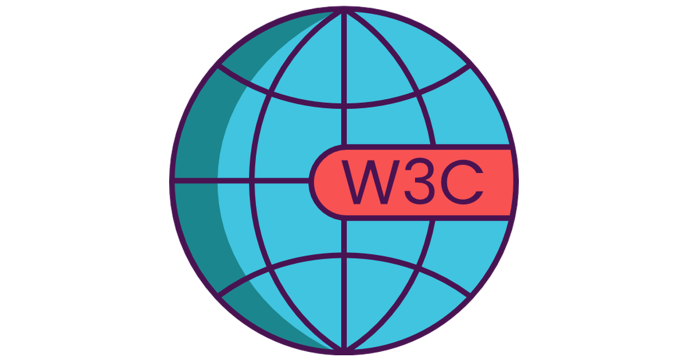

Ejercicios
TAREA 1
Tarea 2 PDO
Tarea 2 mysqli
Crud mysqli
Crud POO
Datos de la persona con ID = 1
datos de las personas con ID = 1, ID = 2 e ID = 3.
-
Ningún usuario

©Robin David Rodriguez Bautista